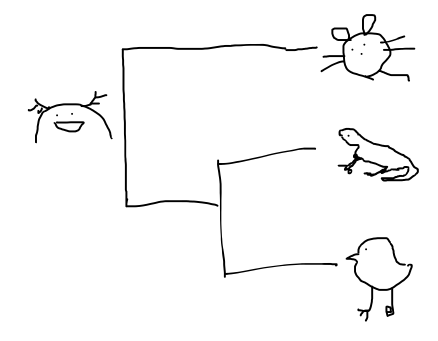

ウルバくん誕生秘話

はじまりは、あるポスドクが系統樹のすみに描いた、名もなき共通祖先でした。
「これは有羊膜類の共通祖先なのか？」
「ウーパールーパーでは？」
「そのツノは何？」
「外鰓では？」
「というか、口が大きくない？」
小さな落書きは、予想外に大きな議論を呼びました。
議論が続くうちに、誰かが言いました。
「有羊膜類でもウーパールーパーでもないなら、もっとずっと昔の、左右相称動物みんなの祖先なのでは？」
こうして、正体不明の共通祖先は、いつのまにか Urbilateria と呼ばれるようになりました。
ツノなのか、外鰓なのか、それとも単なる寝ぐせなのか。いまだに答えは出ていません。
ただし大きな口については、いろいろな研究分野の話をするためだ、という説が有力です。
※この話はフィクションです。